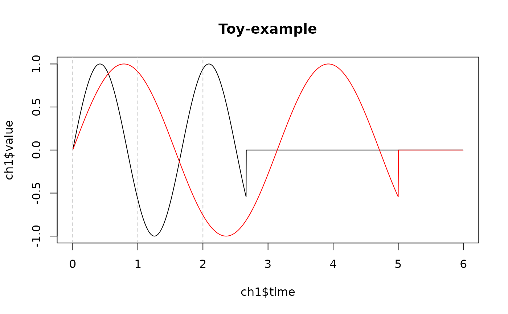

Currently supports continuous 'EDF+' format with annotations
Usage
as_edf_channel(
x,
channel_num,
sample_rate,
label = sprintf("Ch%d", channel_num),
physical_min = NA,
physical_max = NA,
is_annotation = NA,
transducer_type = "",
unit = "uV",
filter = "",
comment = ""
)
write_edf(
channels,
con,
patient_id = "anomymous",
recording_id = NULL,
record_duration = NA,
physical_min = NA,
physical_max = NA,
start_time = Sys.time()
)Arguments
- x
channel signals or annotations; for signals,
xis a numeric vector; for annotations,xis a data frame with'timestamp','comments', and optionally'duration'(case sensitive) columns- channel_num
channel number, integer
- sample_rate
sampling frequency
- label
channel label, default is
'Ch'followed by the channel number for signal channels, or"EDF Annotation"for annotations- physical_min, physical_max
range of the channel values when converting from physical unit to digital; default is the range of
x- is_annotation
whether the channel is annotation
- transducer_type
transducer type
- unit
physical unit or dimension; default is
'uV'- filter
preliminary filters applied to the signals
- comment
additional comments (maximum 32 bytes)
- channels
list of channel data, each element should be generated from
as_edf_channel- con
file path or binary connection
- patient_id
patient identifier; default is
'anomymous'- recording_id
recording identifier
- record_duration
duration of each recording chunk: 'EDF' format slices the data into equal-length chunks and writes the data (interleave channels) to file; this is the duration for each chunk, not the entire recording length
- start_time
start time of the recording; see
as.POSIXct
Value
as_edf_channel returns a channel wrapper (with metadata);
write_edf writes to the connection and returns nothing
Examples
signal <- sin(seq(0, 10, 0.01))
channels <- list(
# signal
as_edf_channel(channel_num = 1, signal,
sample_rate = 375.5),
as_edf_channel(channel_num = 2, signal,
sample_rate = 200),
# annotation
as_edf_channel(channel_num = 3, data.frame(
timestamp = c(0, 1, 2),
comments = c("Start", "half to go", "Finish!")
))
)
# write to file
path <- tempfile(fileext = ".edf")
write_edf(con = path, channels = channels)
#> Recording duration for each chunk is set to `2 sec`
edf <- read_edf(con = path, extract_path = tempdir())
annot <- edf$get_annotations()
annot
#> <fst file>
#> 3 rows, 4 columns (annot.fst)
#>
#> timestamp duration comments channel
#> <double> <double> <character> <integer>
#> 1 0 NA Start 3
#> 2 1 NA half to go 3
#> 3 2 NA Finish! 3
ch1 <- edf$get_channel(1)
# around 1e-5 due to digitization
range(ch1$value[seq_along(signal)] - signal)
#> [1] -1.777197e-05 1.545796e-05
ch2 <- edf$get_channel(2)
range(ch2$value[seq_along(signal)] - signal)
#> [1] -1.777197e-05 1.545796e-05
plot(ch1$time, ch1$value, type = "l",
main = "Toy-example")
lines(ch2$time, ch2$value, col = "red")
abline(v = annot$timestamp, col = "gray", lty = 2)

edf$delete()
unlink(path)